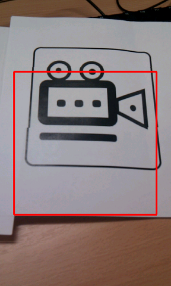

d-touch Mobile - Part 1
d-touch markers are visual markers which are easy to design and easy to communicate to humans. Enrico Costanza has introduced these markers and has launched a dedicated d-touch website for this project. d-touch markers can be used in mixed reality application. As part of the research project for Horizon Digital Economy Research Institute, University of Nottingham , I have developed a d-touch library for Android system. In this post I will give an introduction of the d-touch markers. In our next post I will show how to create a sample application using d-touch mobile library. The library and sample source code is available on the github. Please feel free to use this for building cool projects! Here are few example outputs of the sample code in DtouchSample folder on the github. 